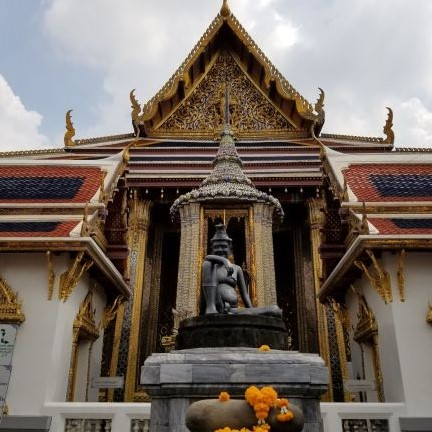
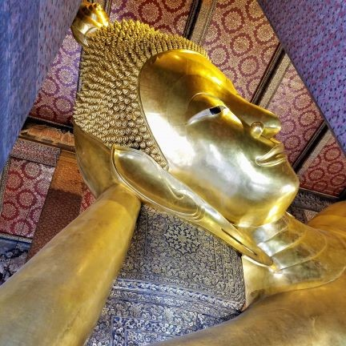
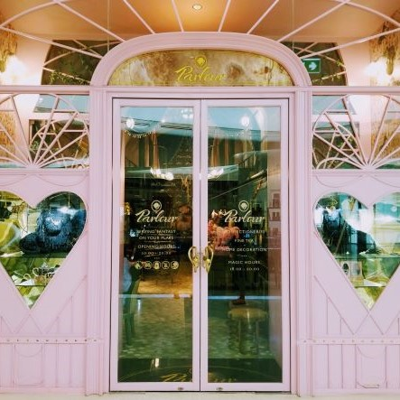
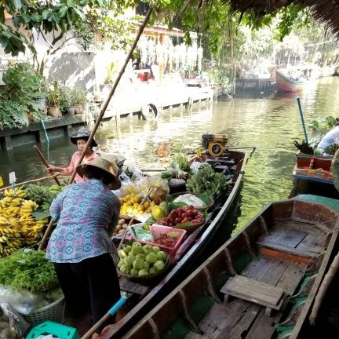
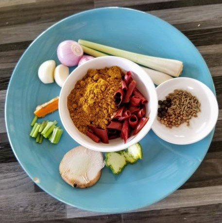

The Basics
Why Bangkok?
Bangkok is the capital city of Thailand, a country in Southeast Asia. Its endless sunshine, exciting experiences, and favorable exchange rate makes it a prime tourism spot for many people. Despite the positives, Bangkok has a bad reputation for being too commercial, inauthentic, and full of scams. Countless bloggers recommend skipping Bangkok altogether when visiting Thailand! I'm here to show you instead why no trip to Thailand is complete without a stop in Bangkok.
When To Go:
Its proximity to the equator means it is hot & humid year-round. The weather is coolest between Novemeber and February; it will still be hot & humid, just not as much! Understandably, tourism is the busiest in those months. If you don't want to be shoulder-to-shoulder with hordes of other people, but can stand a little more heat, consider traveling another month.
What to Bring:
- Sunscreen & Mosquito Repellent
- Water Bottle — Tap water is not safe to drink in Thailand, so do Mother Nature a favor and bring a reusable bottle to fill with filtered water.
- Slip-On Shoes or Sandals — These will make temple-hopping a breeze, oh and did I mention it was hot?
- Long, Loose Pants — You won't be able to enter temples without them!
- T-Shirts — The kind that cover your shoulders; again you won't be able to enter temples without them.
- Umbrella — Sometimes it rains without any warning, be prepared!
- Your phone with the following apps: Grab & Google Translate
| Bangkok at a Glance |
|---|
| Population (in 2010) |
8,200,000 |
| Geographic Size |
605.6 sq mi |
| Average Highs |
91.9°F |
| Average Lows |
76.8°F |
| Average Monthly Income (in 2011) |
48,951 THB |
What You Can't Miss:
Grand Palace
The Grand Palace is the residence of Thailand's royal family and the home of Wat Phra Kaew, or the Temple of the Emerald Buddha. The palace draws crowds akin to ones seen at Disneyland, however, you can avoid the masses by coming early in the morning. The palace has some of the most beautiful buildings and numerous interesting murals throughout. If you're an art lover, it would be unwise to give this spot a skip!

Wat Pho
There are no shortage of temples in Bangkok, the biggest and most popular of which is Wat Pho. It is for this reason that many recommend skipping Wat Pho for any of the smaller, less crowded temples in Bangkok. While I definitely recommend visiting the smaller temples, I can't, in good conscience, say you should skip Wat Pho! There are so many nooks and crannies to visit, some of which are completely empty at times to enjoy in solitude. Wat Pho is also home to a massage school and a giant, golden, reclining Buddha, which is beautiful in and of itself, but if you're a Street Fighter fan like me, Wat Pho is a non-negotiable must-see.

SHOPPING!
Ok, look. I know commercialization is one of the biggest complaints from the Skip-Bangkok camp, but to them I say, "Have you been inside one of the malls?" Bangkok's malls are what other malls aspire to be when they grow up. They are gigantic, air-conditioned, and have everything you want from Instagram-friendly foods to clothing brands you've never heard of. Culture is always changing and one can't expect an industrialized city like Bangkok not to have malls; that being said, if you're looking for something a bit more traditional, read on.

Floating Market
Before industrialization, Bangkok's shopping happened on the water. Today, thanks to tourism, floating markets are still thriving. Damnoen Saduak is the biggesst and most popular floating market, and as such, is now overrun with pollution and overpriced souvenirs. I recommend going to any of the smaller floating markets over Damnoen Saduak. They are not frequented by many tourists and as such, you can enjoy a peaceful breakfast or lunch on local foods in a quieter setting. I also highly recommend taking a boat trip around the river where you will see the houses of people who still live by the river and enjoy a cool breeze.

Take a Class
I have to wonder how many people grumbling about Bangkok's lack of authenticity have invested time to learn more about the culture. From cooking to massage to Muay Thai, Bangkok does not lack in its offering of cultural activities. I strongly encourage anyone visiting Bangkok to sign up for a class!

And What You Can Skip...
Khao San Road
When people complain about Bangkok, much of the time, they are complaining about Khao San Road. Bangkok is a popular vacation spot for students on a gap year and many choose to reside at Khao San Road. As such, it is polluted, disorderly, and full of the typical "tourist-traps". There are plenty of great places outside Khao San Road for a drink, so give this place a pass.
Elephant Riding & Elephant Shows
Please, I beg you, DO NOT ride elephants. Elephants are wild animals and the process of "training" one to be ridden by humans involves physically abusing the elephant from birth and throughout its life. Captive elephants used for riding and circus shows very often die prematurely, and keep in mind, elephants are an endangered species so this is especially problematic. If you must see elephants while in Thailand, the Elephant Nature Park in Chiang Mai is an ethical organization that allows you to see and feed rescued elephants. You can even sign up to volunteer for a week!
Taxis & Tuktuks
Let me clarify: I don't mean all taxis or tuktuks but the ones that are sitting around, usually in front of hostels or near popular tourist spots. Look around, there's a reason why none of the locals are jumping into these even when the line for the bus is a mile long and it's raining. These are the ones those bloggers warned you about; the ones that give Bangkok a bad name! If you'd like to avoid being scammed, stick to Grab taxis and buses.